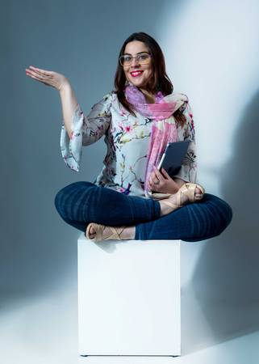
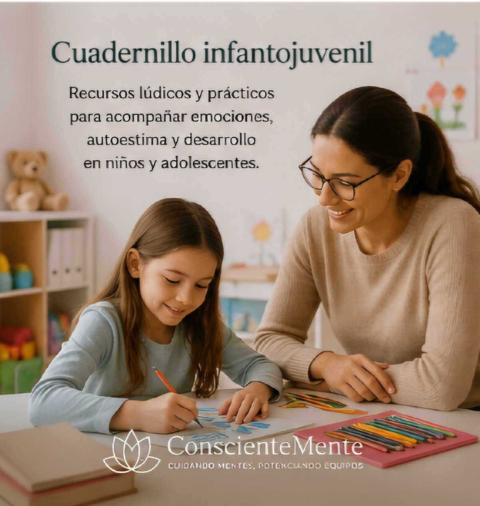
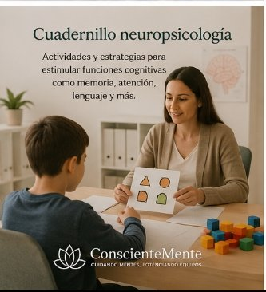
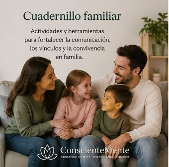

Integro la psicología clínica sistémica, la neuropsicología aplicada y la gestión de personas, para entender las dificultades de niños, adolescentes, familias y equipos.
Agendar por WhatsApp



Agua de Piedra Sur, La Florida · también atiende en Las Condes
Online y presencial